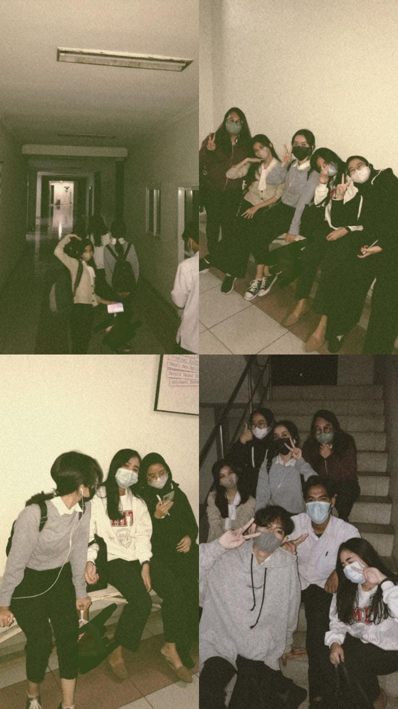
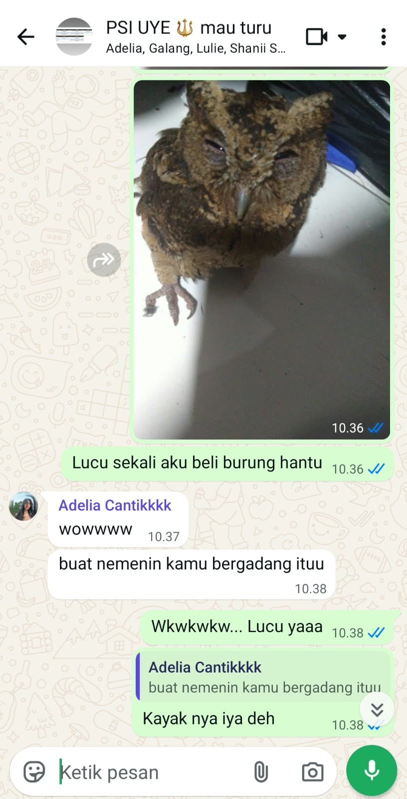
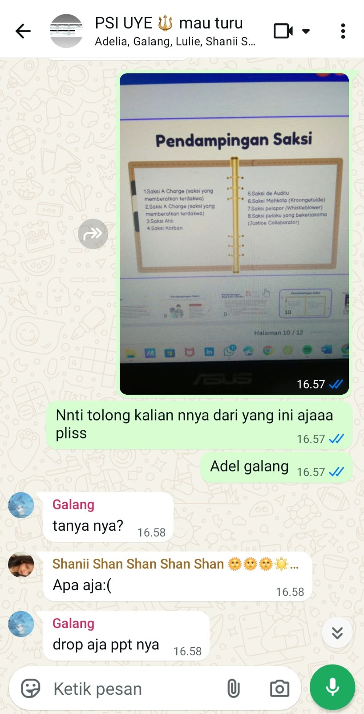
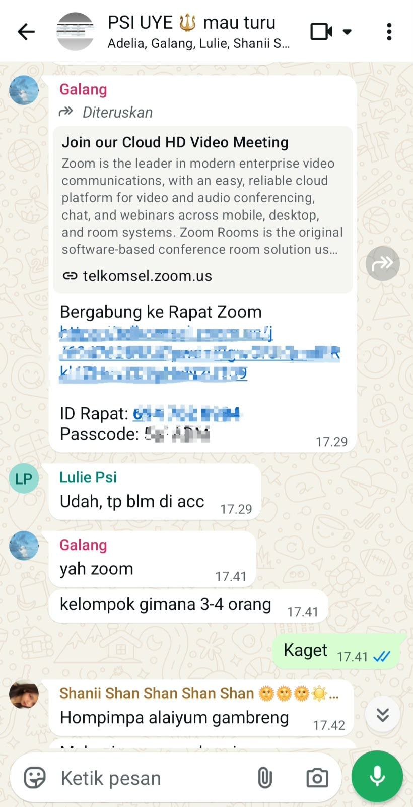

THE LAST ARCHIVE · GENERAL ARCHIVE · 01
OUR STORY
Four people. One chapter. Countless memories.
We didn't know these ordinary days would become memories. At the time, they were simply days we lived, laughed through, complained about, and somehow made our own.
BEFORE WE WERE US
Before there was an “us”, there were four separate lives. Four different personalities, stories, problems, dreams, and ways of seeing the world.
None of us knew exactly where university would take us. We simply arrived, started our own journeys, and somehow ended up walking through part of it together.
Some stories begin with a moment. Ours began with many small ones.

OUR FIRST EXAM
It was only our first exam. We came with nervous faces,
unfinished answers, and probably way too much confidence
for people who barely knew what they were doing.
Back then, we thought it was just another day in college.
We didn't know that somewhere between the panic, the laughter,
and those little moments we barely noticed, we were already
beginning a story that would last far beyond that first exam.
Funny how the moments we never thought were important
are sometimes the ones we end up missing the most.
Ujian pertama kami. Saat itu kami datang dengan wajah tegang,
jawaban yang belum selesai, dan mungkin kepercayaan diri yang
terlalu tinggi untuk orang-orang yang bahkan belum tahu bakal
menghadapi apa.
Kami pikir itu hanya hari biasa di perkuliahan. Kami belum tahu
bahwa di antara kepanikan, tawa, dan momen-momen kecil yang
hampir tidak kami sadari, kami sebenarnya sedang memulai sebuah
cerita yang akan bertahan jauh lebih lama dari ujian pertama itu.
Lucu ya, ternyata hal-hal yang dulu terasa biasa saja justru
menjadi hal-hal yang paling kami rindukan sekarang.
THE ORDINARY DAYS
Looking back, some of the moments we remember most were probably the ones we never thought were important.
Sitting together. Talking about nothing. Complaining about assignments. Laughing at something that would make absolutely no sense to anyone else.
They were ordinary days. Somehow, they became extraordinary memories.
“The moments that matter most rarely announce themselves while they are happening.”
ARCHIVE NOTE · 2026THE CHAOS WE SHARED
Of course, our story was never perfectly organized.
There were last-minute plans, unfinished conversations, ridiculous jokes, strange decisions, misunderstandings, and moments that would probably sound completely different if anyone outside the group heard them.
Maybe that was part of what made it ours.
THE CHAOS WE SHARED
Some conversations were never meant to become memories. Somehow, these did.

THE OWL
Somehow, an ordinary day turned into the day Wowo became part of our story, hohoho✌🏻.

TOPIC TWO
Proof that our group chat had absolutely no sense of normal conversation.

TOPIC THREE
One of those conversations that makes sense only when the four of us are reading it.
SOMEHOW, WE GREW
Somewhere between assignments, deadlines, presentations, projects, exhaustion, and everything else that came with university, we changed.
Not all at once. Not in ways we could immediately notice.
But when we look back now, it is obvious that we are no longer exactly the same people who started this chapter.
BEFORE WE BECOME MEMORIES
Graduation has a strange way of making ordinary things feel important.
The places we used to visit without thinking. The conversations we assumed we could always have. The people we expected to see again next week.
Suddenly, they belong to a chapter that has an ending.
To the four of us.
Untuk kita berempat.
I don't know where life will take each of us after this.
Maybe we will stay close. Maybe our lives will become busy and our conversations will become less frequent.
But I hope that somewhere in the future, when one of us looks back at this chapter, we remember that once, there were four people who shared a piece of their lives together.
And for a while, that was enough.
THE LAST PAGE OF THIS CHAPTER
THE STORY CONTINUES.
This archive preserves where we have been. The next pages are still waiting to be written.